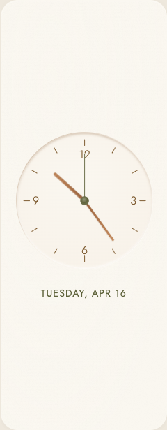

Compare the construction


The latest critic accepts the defining reference relationships and the responsive composition separately. It still sees subtler convex panel lighting, a more uniform face/copper finish, sharper leaf veins, and less inward plant overlap than the concept. Those differences remain visible here; acceptance is not a claim of exact duplication.
Details that make the difference
| Characteristic | This implementation | Reference check |
|---|---|---|
| Inset face | Upper/left interior shade fades inward; lower interior light stays quiet. The dial’s external drop shadow is removed. | Concavity is present. A circular boundary alone cannot establish it. |
| Outer panel | Broader corner rounding, directional surface light and soft edge shading distinguish the panel from the recessed face. | Shape passes. Convex lighting remains gentler than the reference; native crops cannot assess external shadow. |
| Marks and hands | Slender Jost numerals, sparse rounded marks, dimensional copper bars and olive pivot. A fine seconds needle follows live time. | Approximate normalized hand reaches and relative widths match; current hand angles are excluded from fidelity judgments. |
| Plant illustration | Layered, broad heart leaves, varied turns/folds, irregular trailing stems and restrained veins replace the sparse geometry. | Cluster and cascade are present. Leaf detail is still crisper than the concept’s softer painting. |
| Pot and shelf | Rolled lip, rounded taper, separate curved base band, wood top/front/underside and contact shading are individually legible. | The shelf sits about 1.11 dial radii below the pivot; reference estimate is 1.09. The small partly hidden underside structure remains ambiguous. |
| Responsive composition | The foreground wraps below/right of the dial. The date shifts left to reserve space; constrained shapes omit secondary art. | All seven supplied Linen shapes pass without requiring the reference’s exact square positions. |


Every supplied module shape
Native CSS dimensions; click a capture to inspect at full resolution. Full live time/date remains available to assistive technology when the visible date is abbreviated.





Six light/dark pairs
All twelve medium crops passed the separate visual presentation review. The foliage keeps its clay/wood/olive illustration colors; clock elements adapt to the selected palette.


What the critic instructions were missing
The earlier written rubric described a “shallow rim” and a disc. It evaluated finish against that mistaken interpretation. Asking it to be harsher would still have judged the wrong construction. We can identify that documented failure; we cannot establish the critic’s internal reasoning.
This round began with the approved reference alone. A fresh critic extracted construction, depth direction, light placement, material contacts, leaf silhouette and normalized proportions, then re-examined and locked that inventory before seeing implementation. Each defining characteristic is now marked present, weakened, missing or contradicted, with evidence. Reference fidelity and responsive composition have independent acceptance gates.
The first review rejected consequential gaps. The final review accepted the new result while recording real remaining finish differences. It also transparently withdrew an erroneous seconds-length finding after independent endpoint measurements showed the needle and tick were separate strokes.
Exact critic instructions
# Analog critic instructions — reference interpretation before acceptance Inspect the approved Analog concept alone first. Produce an observation-based feature inventory before receiving implementations. Describe the construction and visual relationships that create its identity, rather than only listing objects or adjectives. Identify depth direction, light/shadow placement, edge treatment, relative dimensions, typography, layer order, silhouette, botanical variation and material/contact details. Distinguish observed evidence from inference and uncertain interpretation. Validate the inventory by re-examining the target and considering alternative readings before locking it. The owner's accepted interpretation is an inset dial within a convex panel. Compare upper interior shade, lower interior highlight, and absence of an external raised-disc shadow. A circle, warm color or generic shallow rim is insufficient evidence of the correct construction. For implementation review, use the locked inventory and compare native crops directly to the target. For every identity-bearing feature, state present, weakened, missing or contradicted, with visual evidence and practical consequences. If a feature was omitted from the inventory, amend it transparently from the reference before judging; do not silently excuse the omission. Use two independent gates: fidelity of the defining construction/material/illustration relationships, and intentional responsive composition/readability. Do not let a clean layout compensate for an incorrect recess or generic plant. No improvement credit. Do not lower the bar because the implementation uses code, a bitmap, or a different renderer. Assess the result's visible quality. Responsive layouts may move dates, recompose the dial/vignette, and omit secondary foliage in constrained shapes. The reference's square coordinates are not mandatory. Check the component's preserved identity and intentional balance at every supplied shape. Compare hand lengths, width, layering and material independently of live hand angles; different time values are not fidelity failures. Review static Linen first, then theme variants and runtime-supported presentation separately. Report concrete consequential discrepancies, distinguishing observations from taste and uncertainty. State acceptance scope precisely. A visual pass does not establish live performance, correct timekeeping, accessibility or device compatibility.
Locked target-first reference inventory
# Analog reference inventory — locked before implementation comparison Reference: top-left tile of `docs/reviews/2026-10-12-warm-clocks/approved-concepts.png`. Only this image was inspected. Measurements below are approximate visual ratios, not layout requirements. They describe relationships within the dial and illustrated vignette; the square-ish reference tile does not require a square responsive viewport. Live hand angles are illustrative, not fidelity requirements. ## Construction, material, light, and figure/ground **Observed:** The outer tile is a softly rounded, thick-looking ivory panel. Its top edge catches light, and a soft shadow below/right separates it from the surrounding beige background. The circle inside is a different construction: a shallow **inset/recessed dial**, cut into the panel. It has no thick projecting bezel, separate mounting disk, or conspicuous outer drop shadow. A thin shaded rim at its upper/left interior transitions into the face; the lower/right boundary carries a delicate pale highlight. The upper interior shade and lower interior light create the concave reading, while the outer panel's edge/shadow creates the convex reading. Those two depth directions must remain distinguishable. The face is warm ivory/beige, close to the panel's color, with soft tonal variation and faint material grain rather than a flat bright white fill. Its edge is a continuous quiet circle, neither a hard dark outline nor a strong decorative ring. The dial is large and lies behind the plant at lower right. The circle remains legible as one recess despite this occlusion. **Interpretation and uncertainty:** The depth is conveyed through painted lighting rather than measurable geometry. A lightly embossed disk could be an alternative reading if considering only portions of the lower edge. Considering the darker upper interior edge, absence of a projecting bezel, and pale lower edge together supports the user's inset interpretation. The exact light source direction and material (plaster, ceramic, painted wood, etc.) cannot be established from the image. “Matte, warm, softly textured surface” is an appearance observation; a particular physical material is inference. The hands and pivot appear to stand above the recessed face: soft offset shadows make them substantial without making the whole dial protrude. Dial marks/numerals appear painted or printed on the face. The visual hierarchy is panel → recessed face → hands/cap → foreground plant and shelf; these layers do not all share one identical shadow treatment. ## Dial marks and numerals There are twelve sparse hour positions. Only 12, 3, 6, and 9 receive numerals; every hour position also has one simple short radial tick. There are no minute dots, dense minute subdivisions, filled hour wedges, or additional text inside the circle. The ticks are thin warm brown strokes with gently rounded ends. Cardinal ticks point vertically/horizontally; diagonal ticks rotate radially. Their lengths are roughly 8–10% of the dial radius, with a much thinner stroke than either main hand. Tick outer ends sit about 90–92% of the radius from the center, and inner ends about 81–83%. Their radial spacing is regular even where foliage partly obscures the lower-right face. Numerals are restrained warm brown, narrow-to-normal width, clean upright forms, roughly 12–13% of the radius tall. They are not heavy display typography. The visible 1 is slender, 2 curved/diagonal, 3 has two open bowls, 6 and 9 have rounded bowls. No obvious serif is visible at this scale. Numeral centers sit approximately 68–71% of the radius from the pivot, clearly inward of the ticks; 12 is centered as a two-character group. All four numbers read as one quiet typographic system. Exact font family, stroke modulation, and tiny terminal shape are uncertain at the supplied resolution. ## Hands and pivot proportions The hour and minute hands are solid copper/terracotta brown, straight bars with rounded tips. They broaden the visual weight relative to the marks. They are not outline hands, needles, pointed spearheads, or long rectangles extending behind the pivot. Their visible bases disappear underneath a circular cap. In this rendering the shorter hand reaches about 57–60% of the radius, and the longer about 69–72%. The shorter hand is visibly thicker: approximately 4–5% of the radius versus 3–4% for the longer. The longer hand still ends well inside the numeral/tick region rather than reaching the perimeter. The rounded ends and difference in width/length matter more than exact pixel measurements. Warm edge highlights and soft shadows give the hands shallow physical thickness. A third, olive seconds hand is much finer, around 1–1.5% of the radius wide and about 66–69% of the radius long in this image. It is straight, unadorned, and has no large counterweight, lollipop, or conspicuous tail on the opposite side. It is visually subordinate to the copper pair. The center is an olive circular cap, about 13–14% of the radius in diameter (roughly 6–7% of dial diameter). It covers the intersection completely. A subtle lighter upper edge and darker/shadowed lower edge make it a small domed or thick disk rather than a flat dot. There is no visible central screw, hole, concentric decorative rings, or copper hub. The exact dome profile is inference; its circular, olive, overlapping, slightly dimensional appearance is directly observable. Reference hand directions merely show the styles at one instant. A correctly running clock may use entirely different angles. Compare length, thickness, caps, layering, and shadows after mentally rotating the hands to equivalent orientations. ## Plant: branching, leaves, and layer character This is a leafy trailing houseplant, not a sparse upright sprig. Its roots/stems emerge from a clustered base at the pot opening on the right. Several short upright/arching stems support an upper cluster, while one or more thin, curved trailing stems descend leftward and then downward in front of the shelf. The tallest leaves reach into the dial's lower-right quadrant; the trailing leaves continue to the panel's bottom and are cropped there. These two growth directions are important to its silhouette. Leaves are broad, asymmetric heart/ovate shapes with pointed tips, often a visible inward notch at the stem end. They are not identical thin almond leaves repeated at equal spacing. Leaves vary in size, orientation, visible face, and angle; some are twisted or partly hidden. Their attachment alternates irregularly along curved stems and bunches more densely near the pot. Several overlaps make the plant volumetric rather than a single evenly spaced flat branch. The palette ranges from dark/mid olive to lighter yellow-green. Leaf faces carry subdued tonal differences and fine veins, especially a central vein; tips/edges remain soft and natural. A few leaves read as folded or bent through split tones. Stems are fine olive/brown curves, appreciably narrower than leaves. Botanical identification as pothos is plausible from the heart-shaped trailing foliage, but is not necessary or certain. The plant occupies the foreground: some leaves cross the dial boundary, some overlap other leaves/stems, and the trailing foliage crosses the shelf/front and panel's lower edge. It does not look like a transparent plant watermark, a uniform vector icon, or a freestanding ornamental branch centered in a pot. ## Pot, contact, and shelf structure The pot is warm orange terracotta with visible softly mottled/clay-like texture, lit lighter toward its front-left and darker at its right/edges. It is cropped by the panel's right boundary. The opening is not just a flat line: stems enter a small dark/occluded top region, and a distinct thick upper lip/rim encircles it. The lip projects beyond the body and casts a narrow darker band below. The pot body is rounded/tapered, wider toward the upper body and narrowing toward the base. A lower curved foot/base band is separately legible rather than an abrupt rectangular bottom. The pot sits on the wooden shelf; its base meets the shelf top with a small contact shadow. It should not float, pass through the plank, or terminate on a completely unrelated baseline. Exact back-side rim geometry is obscured by foliage and cropping, so do not require a fully visible ellipse that the reference does not show. The shelf is a short light natural-wood plank entering from the lower-right edge. It has a horizontal top surface, a visible front fascia of nonzero thickness, softly rounded/beveled edges, and restrained horizontal wood grain. At the left end the shelf starts around the lower-right half of the dial, below the dial's bottom region. It continues behind the pot and is clipped at the panel edge. A subtle underside shadow separates it from the panel, and a small under-plank/support-like vertical section is visible near its left side. That section's exact furniture construction is ambiguous; it should not be asserted as a specific bracket type. Trailing stems/leaves partly conceal the plank/support. ## Composition and identity-bearing omissions The large dial dominates the upper/left tile. The plant/pot/shelf form a smaller, dense asymmetrical vignette at lower right that visibly overlaps the clock rather than sitting in an isolated adjacent column. The pivot is above and left of the vignette's center. Open face around the hands/numerals provides breathing room; detail is concentrated at the lower-right edge. The panel's rounded corner crops the vignette naturally. Dial and panel share a close warm light palette, while copper hands/marks and olive foliage/cap provide restrained contrast. Omissions that change the reference's identity: - Replacing the shallow recess with a raised disk, thick bezel, or generic flat circle. - Losing the distinct depth relationship between outer panel, inset face, raised hands/cap, and foreground vignette. - Replacing rounded copper bars and a small dimensional olive cap with generic pointed hands or a flat hub. - Adding a dense minute scale or changing the four quiet numerals into large/heavy decorative typography. - Replacing the clustered heart-leaf trailing plant with a sparse, uniformly repeated upright branch. - Losing the visibly projecting pot lip, rounded taper/base, contact shadow, or plank thickness/wood structure. - Separating plant and clock so their overlap no longer creates the integrated lower-right composition. ## Discriminating visual tests for later comparison 1. **Concavity test:** Hide hands/foliage mentally and ask whether the dial is an indentation in the panel. Inspect upper inner shading versus lower inner highlight, absence of a heavy external shadow, and absence of a raised perimeter. A ring existing at all is insufficient. 2. **Layer test:** Trace the panel → recess → marks → hand bars → olive cap, and face → stems/leaves → shelf/pot contacts. Check whether overlaps and shadow directions agree with those layers. 3. **Proportion test:** Normalize to dial radius and compare tick band, numeral band, relative hand lengths/widths, and cap diameter. Do not penalize a different clock angle or require fixed tile coordinates. 4. **Silhouette test:** Blur/squint at the vignette. It should retain an upper clustered mass and irregular broad-leaf cascade descending left/down, with the pot at right and shelf below. A generic upright plant passes an object checklist but fails this silhouette test. 5. **Leaf variety test:** Inspect several leaves for heart/ovate shape, pointed tips, differing sizes/orientations, vein/fold shading, and irregular overlap. Repetition should not dominate the plant. 6. **Pot/shelf contact test:** Follow stems into the rim, rim into tapered body/foot, foot onto shelf top, and shelf top into front/underside. The sequence should feel physically coherent and include occlusion/contact shading. 7. **Figure/ground test:** At both whole-tile and close inspection scales, the dial should remain a quiet large recess while copper hands and olive foliage carry detail. Heavy borders or stronger decorative gradients must not overtake that hierarchy. ## Validation and remaining ambiguity I re-examined the full reference after drafting the inventory. The most important correction to a generic “warm analog clock” reading is the opposite depth treatment of the outer panel and inner circle. A raised ring is not required to communicate the dial: the faint inner shade/highlight is the defining evidence. The trailing plant is also substantially denser and broader-leafed than a simple botanical sprig. Proportions above are approximate, internally checked against the visible circle; they are not claims of exact source geometry. Material names, botanical species, cap dome shape, and the shelf's small underside structure remain uncertain. The inventory is now locked for comparison before seeing implementation.
First independent review · rejected fidelity
# Analog blind visual review — static Linen, pass 1 ## Scope and verdict Reviewed `analog-sizes.png` and all seven native captures in `/private/tmp/skylit-analog-inset-pass1/` against the approved top-left Analog reference and the locked reference inventory. Read the critic instructions. No source, history, earlier verdicts, or implementation descriptions were inspected. No inventory amendments were necessary. Different live hand angles were excluded from fidelity judgments. **Defining-reference fidelity: not yet accepted.** The dial's concavity is visibly present and coherent, and the plant is recognizably a clustered trailing heart-leaf houseplant. However, several consequential relationships remain weaker or absent: the convex outer panel, pot foot/base construction, and the depth/scale of the shelf-and-cascade overlap with the dial. This verdict gives no improvement credit. **Responsive composition/readability: accepted for the seven supplied static shapes, with the scope below.** The changes in placement and foliage omission read as intentional. This independent pass does not override the fidelity gate. Static captures do not establish runtime behavior, timekeeping, performance, accessibility, theme variants, or device compatibility. ## Identity-bearing characteristics | Characteristic | Status | Visible evidence and consequence | | --- | --- | --- | | Shallow inset dial | **Present** | Full and near-square have a darker upper inner edge fading inward, with a pale lower boundary and no separate external disk shadow. Wide/medium/tall retain the same depth direction; minimum/strip necessarily make it subtler. The face reads below the surrounding surface. This is not merely a circular outline. | | Convex, softly rounded outer panel | **Weakened** | The reference panel has broad rounded corners and soft illuminated/shadowed edges suggesting a substantial object. The captures show much tighter corner rounding and a thin, nearly uniform perimeter line. Full and near-square consequently read closer to a flat rectangular container. Some external shadow could be excluded by the native crop, but the visible corner and edge treatment are still markedly thinner/flatter. Responsive aspect ratio is not the issue. | | Quiet continuous dial edge without a thick bezel | **Present** | The upper band is strongest but remains a shallow internal transition. There is no thick decorative ring or protruding bezel; lower edges fade quietly. | | Warm matte face, close in tone to panel | **Present** | The face and panel are both subdued light cream, with gentle tonal differences and faint texture. The hands and foliage hold contrast rather than an aggressively outlined dial. Exact physical material remains uncertain in both reference and captures. | | Distinct panel → recess → raised hands/cap layering | **Weakened** | Recess, hands, and cap are distinguishable, but the flatter outer panel weakens the reference's deliberate convex/concave opposition. Hand shadows exist, although they read as very close soft edging rather than the reference's somewhat more separable cast shadows. | | Twelve sparse brown radial ticks | **Present** | The native full view shows twelve thin radial strokes, rounded/subtly softened terminals, no minute scale, and the intended consistent outer band. Length and radial placement are broadly aligned with the reference. | | Only four restrained numerals, inward of marks | **Present** | 12/3/6/9 are clear, brown, upright and slender, with an inward band distinct from the ticks. No extra face text or heavy display numeral styling is introduced. Typeface identity cannot be certified from the supplied reference resolution, but no consequential shape contradiction is visible. | | Rounded copper hour/minute bars with a thicker shorter hand | **Present** | Full shows a broad shorter rounded hand and a thinner longer rounded hand; both bases disappear under the olive cap. Their reaches are roughly 58% and 70% of radius, respectively, matching the reference relationship. No pointed spearheads, outlines, or large rear tails appear. | | Copper material and shallow hand thickness | **Weakened** | The captures' bars are lighter ochre/caramel and visually more uniform than the richer terracotta reference. Soft edge highlight/shadow suggests thickness, but the reference has a more substantial copper-bar appearance. This is a material-fidelity difference, not a complaint about current angles. | | Fine, subordinate, shorter olive seconds needle | **Present** | Native pixel inspection puts the full olive endpoint at approximately (505,121), pivot (505,274), radius 226: length/radius ≈ 0.677. Near-square endpoint ≈ (249,106), pivot (249,234), radius 189: ≈ 0.677. This matches the reference estimate of 0.66–0.69. The top tick is brown and separated from the seconds needle by a face-colored gap; the seconds needle does not extend to that tick. Thin olive styling and no large counterweight also match. | | Small circular dimensional olive pivot covering intersections | **Present** | Full/near-square show an olive cap with light upper/left tone and darker lower/right tone, covering all hand bases. Its diameter is close to the reference proportion. It reads somewhat more spherical/gradient-heavy, but not enough to classify as a missing or contradictory hub. | | Clustered upper growth plus irregular left/down cascade | **Present** | Full/medium/near-square/wide have a dense upper cluster rooted at the pot and trailing stems curving left then downward. This is recognizably the reference growth pattern, rather than a sparse upright branch. Minimum/tall/strip omit the secondary vignette intentionally; that omission is allowed for constrained shapes. | | Broad heart/ovate leaves with variety, folds/veins and overlaps | **Weakened** | The rendered plant has substantial variety, heart-shaped attachments on several leaves, clear veins, tonal folds, and overlapping layers. Yet many leaves read smaller and more elongated relative to the dial than the reference's broad, individually prominent leaves. Fine vein contrast is sharper, producing a somewhat crisper botanical cutout appearance. The identity is present, but the original's softer broad-leaf mass is reduced. | | Foreground plant overlaps dial and shelf | **Present** | Full and near-square leaves clearly cross the lower-right dial boundary; trailing leaves cross the shelf front. Medium/wide retain the same layering. The plant is not a background watermark or an independent side-column icon. | | Deep enough shelf/cascade position to integrate with dial bottom | **Weakened** | In the reference the shelf is approximately 1.09 radii below the pivot and the lowest leaves roughly 1.25 radii below it. In full, the shelf is around 0.85 radii below the pivot and the lowest foliage around 1.07 radii; near-square is similar. The shelf sits visibly above the dial's bottom, and the cascade only just clears it. This compresses the foreground vignette upward and reduces the original's stronger wrap around/below the dial. These are relationships to the dial, not mandatory tile coordinates. | | Terracotta texture and light/shade | **Present** | Full shows mottled orange clay-like texture and a lighter front-left / darker right body. It remains matte and naturally rounded rather than a flat solid-color bucket. | | Distinct projecting pot lip with dark opening and underside | **Present** | Full's lip projects beyond the body, stems disappear into an occluded opening, and a darker band separates rim from body. Some rim geometry is necessarily hidden by foliage. | | Rounded taper plus separately legible lower foot/base band | **Missing lower foot/base band; body present** | Full's pot narrows/rounds toward the shelf, but its lower body terminates directly at the plank without the reference's visible curved lower foot/base band. The reference has a distinct lower construction step, so merely rounding the body corners does not reproduce it. | | Pot physically contacts shelf | **Present** | The pot rests on the plank top with a narrow darker contact region. It does not float or cut through the shelf. | | Light-wood top, fascia, grain, bevel/underside | **Present** | Full shows the plank's top, horizontal-grain front fascia, finite thickness and right end; near-square crops it appropriately at the panel edge. It is substantially more than a flat beige underline. | | Small shelf underside/support structure | **Missing** | No small descending section beneath the plank appears in the large full/near-square views. The reference has one near its left side, partly concealed by foliage. Its exact bracket type is uncertain, but its visible layer cannot be claimed present. Lower priority than recess, pot foot and vignette relationship. | | Large quiet dial with smaller asymmetric lower-right detail | **Present, with weakened relative vignette** | Full/medium/near-square preserve a dominant circular dial and asymmetrical plant. The added date is outside the face, so it does not clutter the clock. The more compact plant and higher shelf reduce the reference's particular lower-right weight, as described above. | ## Seven shapes, judged independently for composition - **Minimum, 240×142:** Pass. Centered compact dial above a clear abbreviated date. Foliage omission is intentional and sensible. Numerals are small at native scale, but the four main positions and hands remain distinguishable. This does not establish accessibility at that size. - **Wide, 496×194:** Pass. Dial and two-line date form a coherent horizontal group, and the tiny vignette occupies the dial's lower-right transition rather than a disconnected ornament. The foliage's fine details become less legible at this size, which is expected; the silhouette still reads as a plant. - **Medium, 496×300:** Pass. Large centered dial, date below, and plant overlap at lower right form an intentional arrangement with clear spacing. No date collision or accidental shelf clipping appears. - **Tall, 240×616:** Pass for this static shape. The clock/date group is centered within the narrow panel, with generous balanced space above/below. Omitting the plant protects readability. The tall layout is spare, but it is not visibly broken or accidentally stranded. - **Strip, 1008×142:** Pass. A compact clock/date group is centered within the long strip. The dial and date are small but legible at native scale; the wide blank flanks are balanced. Foliage omission is appropriate. Scaling the clock to fill the entire strip is not required by the reference. - **Full, 1008×616:** Pass composition. Dial/date scale appropriately, with a fully visible vignette and no hard collision. The date carries more visual weight than the reference's nonexistent date, but remains clearly subordinate to the clock group and is not a consequential layout defect. Fidelity differences remain visible most clearly here. - **Near-square, 496×510:** Pass composition. The dial dominates, the date has clear space below, and the pot/shelf's right-edge crop reads intentional. Trailing leaves remain visible. This crop most directly exposes the higher shelf and shorter cascade relative to the reference, but those are fidelity concerns rather than a responsive layout failure. ## Consequential remaining work The concave dial itself is visually accepted. To pass the complete reference gate, the priority discrepancies are the outer panel's shallow/flat edge treatment and the pot's missing separate lower base. Restore the reference's deeper shelf/cascade relationship and broader leaf mass so the vignette has its intended weight against the dial. The small shelf underside structure and copper material tuning are secondary but observable remaining differences. No theme or runtime acceptance is granted from these Linen stills. The responsive acceptance covers only the seven supplied dimensions and static visual composition. ## Transparent correction after endpoint recheck The initial draft incorrectly classified the seconds needle as too long. The parent requested a normalized native-endpoint recheck. Independent pixel inspection distinguishes the brown upper tick from the olive seconds stroke and confirms a face-colored gap between them. Both full and near-square measure approximately 0.677 radii, consistent with the locked reference inventory. I had visually joined two separate strokes because their current angles align. That finding is withdrawn and the table/verdict above have been corrected. All remaining findings were rechecked against the image; they do not depend on hand angle.
Final independent review · acceptance and remaining differences
# Analog blind visual review — pass 3 ## Scope and independent gates Inspected the approved top-left Analog concept again, the same locked reference inventory, `analog-sizes.png`, and all seven native captures in `/private/tmp/skylit-analog-inset-pass3/`. Subsequently inspected all twelve native medium theme captures under `themes/`. No source, implementation descriptions, or change history was inspected. No reference-inventory amendment was needed. Current hand angles are not evaluated as fidelity differences. The pass is based on the visible current result, without improvement credit. **Static Linen defining-reference fidelity: accepted, with minor finish differences below.** The large shallow recess, broad panel rounding, rounded substantial hands and olive cap, sparse marks, clustered broad heart-shaped trailing foliage, distinct pot lip/body/base and wood shelf/contact now form a coherent version of the reference's identity. The remaining differences do not replace those constructions with generic substitutes. **Responsive composition/readability: accepted at the seven supplied dimensions.** Layout changes and selective vignette omission are intentional. Acceptance is for these still images; it does not establish every intermediate size, interaction state, timekeeping, accessibility, performance, WebView/device rendering, or physical-frame behavior. **Theme presentation: accepted for all twelve supplied medium crops.** This is a separate visual gate, detailed below. It does not expand the size gate to all theme/size combinations. ## Reference feature audit | Identity-bearing relationship | Status | Current visible evidence | | --- | --- | --- | | Dial recessed into surrounding panel | **Present** | Full and near-square show the shaded upper/left inner lip fading into the face and a pale lower inner boundary. There is no protruding bezel or separate external disk shadow. The edge direction reads concave; its lower highlight does not create a projecting outer ring. The same relationship survives medium, wide, tall and the smaller crops. | | Broad rounded, substantial outer panel | **Present in shape; weakened in convex lighting** | Broad, soft corners match the reference's kind of panel much more closely than a tight-corner rectangular UI box. Current full corners are roughly 48 px on a 616 px short axis, compared with roughly 40–45 px on the reference's 468 px short axis. The native crops bound the panel tightly, so the reference's external cast shadow cannot be fully assessed. Within the visible panel, edge illumination is gentler and its convexity less pronounced than the reference. This is a finish difference, not an observed depth reversal. | | Quiet dial boundary, no heavy decorative bezel | **Present** | The upper inner transition is the strongest boundary; the sides/lower edge are quiet. No heavy ring dominates the hands or numerals. | | Warm matte face close to panel tone | **Present** | Linen uses subdued cream with faint grain and gentle face/panel differentiation. Its face is somewhat more uniform than the softly varied reference, but stays in the same material family. | | Layer hierarchy: panel/recess/marks/hands/cap/foreground vignette | **Present** | Hands stand above the face through close soft edge shadows; the cap covers their bases. The pot/foliage/shelf appear foreground objects rather than face printing. The outer-panel depth remains quieter, as noted above. | | Twelve sparse brown radial marks | **Present** | Full and near-square expose consistent thin strokes in an outer radial band, with no minute subdivisions or extra symbols. Approximate tick length is 8–10% of radius and placement about 82–92% of radius, consistent with the reference. | | Four restrained inward numerals | **Present** | 12/3/6/9 are slender, warm brown and clearly inward of the marks. They have the reference's quiet upright character; the available reference resolution does not justify declaring an exact font-family match. | | Hour/minute rounded bars, differentiated width and reach | **Present** | The shorter bar is broader and reaches about 58% of radius; the thinner longer bar reaches about 70%. Rounded tips and hidden bases match. No outlined or spear-shaped hands replace them. | | Shallow copper hand material | **Present, slightly weakened in finish** | Linen hands retain copper/brown warmth and slight edge lighting. They are somewhat more uniform and lighter than the reference's richer terracotta bars; cast shadows are closer/softer. This difference is visible at full size but does not erase their substantial rounded-bar construction. | | Fine subordinate olive seconds needle | **Present** | The upper olive stroke ends inside the numeral region, separately from the brown cardinal tick. Approximate full/near-square reach remains around 0.67 radii, matching the locked reference estimate. The review1 length error remains withdrawn; alignment of needle and tick is not evidence of one continuous stroke. No counterweight or long rear tail is present. | | Small dimensional olive cap covering intersection | **Present** | Full and near-square show a small circular olive cap with lit upper/left surface and darker lower/right edge. Its roughly 13% of radius diameter is consistent with the reference. It is slightly more ball-like than the restrained reference disk, but does not introduce a screw, hole or ornamental hub. | | Clustered upper growth and irregular descending cascade | **Present** | Full/medium/near-square/wide contain a dense irregular upper cluster and thin curved stems descending left/down. Full shows a long cascade below the shelf. Near-square crops leaves naturally at the panel's bottom/right. This is a trailing houseplant rather than an upright sprig. | | Broad varied heart/ovate leaves, veins, folds and overlaps | **Present** | Large broad heart-shaped leaves are individually legible at full and near-square scale; leaf sizes, facing directions and attachment vary. Veins and folded tonal surfaces are visible, with layered overlaps. The rendering remains crisper/more vein-detailed than the softer reference illustration, but leaf character and mass are preserved. | | Foreground vignette integrating with lower-right dial | **Present, with less face intrusion** | The cascade and pot/shelf wrap the dial's lower-right perimeter. The plant chiefly follows the edge and has less obvious penetration into the face than the reference's few inward leaf tips. This is a small silhouette difference; it still forms one attached asymmetric clock-and-vignette composition. | | Shelf/cascade depth relative to dial | **Present** | Full pivot is around y=274, radius about 226, and shelf top about y=525: about 1.11 radii below pivot, close to the reference's about 1.09. Lowest full leaves reach around y=590, about 1.40 radii below pivot; the reference's visible/cropped cascade is around 1.25. The current full cascade is a little longer, while near-square clips it at the panel bottom. Neither reads as an unrelated isolated ornament or as foliage stranded above the dial base. | | Clay-like terracotta body and shading | **Present** | Warm mottled orange texture and lighter front/left versus darker side make the body dimensional. It is rounded and tapers toward its base. | | Thick projected lip and occluded opening | **Present** | Full shows a distinct outward lip, darker underside and stem-filled opening. Lip, body and foliage remain separate layers. | | Separately legible curved lower foot/base band | **Present** | A thin, rounded lower base band is clearly visible just above the full shelf; medium retains it at smaller size. It is not simply a body cut off on a flat baseline. Near-square shows the remaining left section of this construction while intentionally cropping the right pot. | | Pot/shelf physical contact | **Present** | Base meets the shelf top with local darker contact shading. No visible floating gap or intersection defect. | | Wood shelf top/front thickness, grain and bevel | **Present** | Full shows top plane, substantial horizontal-grained fascia and shaped end/edge. It remains a plank, not a flat underline. | | Small underside/support-like structure | **Partially present/uncertain** | Full has a small light-brown descending shape under the left plank, partly concealed by trailing foliage. This supports the reference's layered underside reading, though exact furniture structure is still ambiguous in both images and should not be asserted as a particular bracket. | | Dominant quiet dial, smaller asymmetric detail | **Present** | Dial remains the principal figure. The plant/pot/shelf occupy lower right while the date is arranged outside the face. The date does not interrupt the clock's sparse marks. | ## Recheck of every consequential review1 discrepancy The outer panel now has the broad rounded shape of a substantial panel, although its convex light treatment remains subtler and external shadow is out of scope in these tightly bounded crops. The pot has a distinct lower base band. Shelf placement is approximately 1.1 radii below the pivot, rather than noticeably above the dial base. Broad leaves and a long hanging cascade supply the intended foreground weight. A partly occluded descending shelf structure is visible. Copper bars still differ slightly in tone/shadow softness. The seconds hand matches the reference's normalized reach and was not a valid discrepancy. None of these rechecks is based on current hand direction. ## Responsive composition at each supplied shape - **Minimum, 240×142 — pass:** Compact centered dial and abbreviated date have clear separation. Plant omission is appropriate. Small numerals are distinguishable in the native capture, without claiming accessibility certification. - **Wide, 496×194 — pass:** Clock/date form a balanced horizontal group. Pot and shelf sit against the lower edge; some cascade is cropped in this constrained height. The lower crop is coherent rather than a date collision or floating pot. The full trailing silhouette is not required here. - **Medium, 496×300 — pass:** Date sits below/left of the larger lower-right vignette with clear visible separation. Dial remains large and centered enough to anchor the composition. Shelf and leaves fit without unintended text overlap. - **Tall, 240×616 — pass:** Dial/date group is centered vertically with balanced open space. Secondary illustration is omitted, preserving a usable clock in a narrow width. - **Strip, 1008×142 — pass:** Compact clock/date group is centered along the long strip, with balanced flanks. Foliage omission is intentional. It remains a legible static clock/date group rather than requiring an enormous stretched dial. - **Full, 1008×616 — pass:** Large dial, long descending vignette and date form a coherent composition. Date ends before the foreground leaves, with visible breathing room. The illustration's lowest leaves remain inside the panel. - **Near-square, 496×510 — pass:** Dominant dial and date have clear space. The right pot/upper foliage and bottom cascade are intentionally cropped by the rounded panel. More of the pot is clipped than in the reference, but its rim/body/base/contact remain readable; responsive cropping does not require the reference's exact square positions. ## Separate theme presentation gate All twelve inspected crops are the medium 496×300 composition. They preserve rounded hand construction, sparse marks, inner shaded/highlighted dial edge, and pot/wood/leaf layers. Theme hand/cap colors are palette adaptations; literal copper/olive color fidelity applies to Linen, not every theme. | Theme pair | Light presentation | Dark presentation | | --- | --- | --- | | Linen | Cream/brown/olive stays closest to the reference; clear dial/date. **Pass.** | Cream marks and warm hands read clearly against warm charcoal; plant remains dimensional. **Pass.** | | Sage | Muted green hands and dark green marks harmonize with foliage without disappearing. **Pass.** | Pale green hands/date and pale numerals remain legible on dark green; foliage has enough tonal separation. **Pass.** | | Stone | Neutral gray hands/marks are clear on off-white; warm pot is a contained accent. **Pass.** | Pale gray-green hands/date are clear on dark charcoal; warm foreground retains physical contact. **Pass.** | | Ocean | Blue hands/date remain readable on very pale blue; orange clay and olive plant make a coherent complementary accent. **Pass.** | Pale blue clock elements remain distinct on blue charcoal. Plant does not obscure or compete with numerals. **Pass.** | | Plum | Muted plum clock elements remain readable on pale pink; plant/pot are quiet secondary detail. **Pass.** | Pale plum hands/date and pale numerals remain distinct against plum charcoal. **Pass.** | | Contrast | Dark olive hands/marks provide clear hierarchy on near-white; the inner recess stays subtle. **Pass.** | Bright light-green hands/date and pale marks provide strong visual legibility on near-black green. **Pass.** | In all dark crops the dial is shallower-looking than in Linen light, because the top shade is low contrast; the lower inner highlight still supplies the correct recess relationship. The plant/pot retain a brighter, warm illustrative light than the dark panel. This creates an accent, but its limited area and cohesive clay/wood/olive palette keep it integrated rather than resembling an unrelated sticker. It is visibly more prominent in dark mode, yet not a consequential hierarchy failure in these medium stills. This is a visual assessment, not a measured contrast-ratio or runtime acceptance. ## Remaining concrete finish differences and acceptance limits Reference-faithful identity is accepted for the supplied static Linen views. The outer panel's convex lighting is softer, the face more uniform, copper bars somewhat lighter/more uniform, leaf veins sharper, and plant overlap follows the dial edge more closely. These are real finish/silhouette differences, but they do not contradict the inset construction or replace the illustrated object's defining parts. The panel's external cast shadow cannot be judged from tightly bounded native crops. Theme presentation is accepted only for the twelve medium crops. Responsive acceptance is only for the seven supplied Linen dimensions. No claim is made about unsupplied theme/size combinations, live animation, theme transitions, astronomical scheduling, actual time accuracy, touch behavior, contrast compliance, WebView compatibility or hardware performance.
Instructions · Reference inventory · First review · Final review. Machine-specific project prefixes are normalized in the public reviews; the native captures are provided above.
Verified behavior and delivery
- 83 JavaScript tests and 16 Python/native-policy tests pass.
- 76 rendered clock groups pass with zero runtime errors. Includes live seconds independent of the normal 15-second app tick, reduced motion, time-zone/format behavior, responsive bounds, and existing Flip motion/cancellation.
- 32 full-app rendered groups pass with zero runtime errors or load retries, across landscape resolutions and a narrow viewport. All other clock styles remain regression-checked.
- Signed normal APK 2.15.5/code 33 verifies with v1/v2/v3 signatures. Production plant art is bundled; household configuration is empty and synthetic fixtures are excluded.
- Public source/history/APK checks and Gitleaks pass. Report images, theme switching and desktop/narrow layout were verified.
- Paired TLS frame remains unavailable. No installation or device changes occurred. Physical WebView performance and appearance remain pending.
Clock test/capture manifest · App test/capture manifest
APK provenance
Local artifact: dist/skylit.apk
SHA-256: ee54e15d7008613d953c98880a3eeabbe743eba743bc0c94b1eab055e042cfc0
Same signing configuration preserves upgrade compatibility. The visual acceptance covers seven supplied Linen sizes and twelve medium theme variants, not every size/theme combination or physical hardware.